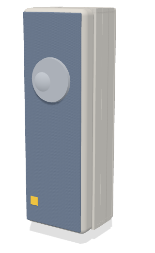

W-ishi
A personal safety token for seniors.
A discreet token that detects falls, lets the senior cancel, and reaches the right person wherever they are, without cameras, microphones or constant tracking.

Four disciplines, one token.


Summary
Being written
Problem Background
Why seniors living alone need a better way to call for help.
2.1Singapore’s Ageing Population
Singapore is among the fastest-ageing societies in Asia. The proportion of citizens aged 65 and above is projected to reach about one in four (23.9%) by 2030 (NPTD, 2025). The number of citizens aged 80 and above rose by about 60% between 2015 and 2025, from 91,000 to 145,000 (NPTD, 2025). Health and support systems will therefore need to serve not only more seniors but older and frailer ones, whose care needs are greater.
This growth has been accompanied by a shift in how seniors live. In 2024, around 87,000 residents aged 65 and above lived alone (MOH, 2025), up from about 58,000 in 2018, an increase of half in six years (Singapore Department of Statistics, 2025). Living alone is not in itself a risk, and for many seniors it reflects a valued preference for independence. However, it removes the person most likely to notice when something goes wrong. For these seniors, how quickly help arrives in an emergency depends on whether they can raise the alarm themselves and whether someone is available to respond.
Falls are the emergency in which this dependence matters most. Falls account for 85% of all elderly trauma cases seen in Singapore's emergency departments (Matchar et al., 2017) and for 40% of injury-related deaths (Ang et al., 2020). About one in three community-dwelling adults aged 65 and above falls at least once a year, and many are "silent fallers" who do not report the fall unless they are injured (Ang et al., 2020). For a senior living alone, an injury that prevents them from getting up or reaching for a phone can mean lying on the floor for a long time which may be associated with worse outcomes than the fall alone.
Together, these three trends define the problem this project addresses: a growing population of older seniors, more and more of whom live alone, facing a common hazard that often leaves them unable to call for help.
2.2The National Response: Age Well SG
Singapore's policy response to an ageing population rests on the 2023 Action Plan for Successful Ageing, which is organised around three themes: Care, Contribution and Connectedness (MOH, 2023a). Its flagship programme is Age Well SG, a national programme launched in November 2023 and led jointly by the Ministry of Health, the Ministry of National Development and the Ministry of Transport. Its stated aim is to help seniors age actively, stay socially connected and be cared for within their own communities (MOH, 2023b).
The programme can be broadly categorised into five areas: Active ageing, Living environment, Senior volunteerism, Care support and Age-well neighbourhoods. This project focuses on two of these, because they most directly shape how seniors live independently day to day: Active ageing, which supports seniors in the community through Active Ageing Centres, and Living environment, which supports seniors at home through Community Care Apartments.
Active Ageing Centres (AACs)
AACs are drop-in centres in residential estates that offer active ageing programmes, befriending and care referrals. The AAC network grew to over 230 centres islandwide (MOH, 2024), with the goal that eight in ten seniors will have an AAC near their home (Age Well SG, n.d.). AACs reduce isolation by giving seniors a regular reason to leave home and a place where staff and peers notice when someone is missing.
Community Care Apartments (CCAs)
CCAs are HDB's assisted-living public housing for seniors. They combine senior-friendly design with a compulsory Basic Service Package that includes 24-hour emergency monitoring and response, basic health checks and an on-site community manager (MOH, 2020). The first development, Harmony Village @ Bukit Batok, was launched in February 2021 with 169 units (Housing & Development Board, 2021). CCAs therefore build emergency response into the home itself. In 2026, to reduce service fees, the emergency alert device was made optional, and residents who decline it rely on CCA staff for 24-hour support (MOH, 2026).
In short, both models depend on a person to notice a problem and respond. AACs do this through scheduled contact, and CCAs through a small pool of on-site staff.
2.3Field Sites
2.3.1Lions Befrienders
Based on our site visits, Lions Befrienders runs AACs where seniors exercise, cook and socialise. The centres also have self-service stations where seniors can check their BMI and blood sugar levels (Figure 2.1). Beyond this, its staff monitor more vulnerable seniors through daily tablet check-ins (Figure 2.2) where a missed check-in is escalated to family, a neighbour or staff. This means a senior who falls is only found after a scheduled check-in has been missed, and seniors with limited mobility, who are most at risk, are often the least able to attend centre activities at all.
2.3.2Harmony Village
Harmony Village @ Bukit Batok houses about 189 residents, 80% of whom live alone (from our co-design workshops, Section 3.1). They are supported by three care staff per shift, but as some of them need to man the counters, only one is typically free to respond, an effective ratio of one care staff member to 189 residents (1:189). Every unit was fitted with a call button linked to 24-hour emergency response, but a few staff cover many residents, so how quickly help arrives depends on whether someone is free to respond.
2.4Motivating Incident: The 2 September Fall
- 12 PMShe fell down in the shower and the call button was pressed
- Moments laterGets an automated response, but nobody comes
- Next 2 hoursDrags herself to the front door
- 2 PMNeighbours finally hear her and help
- 3 PMThe Singapore Civil Defence Force (SCDF) finally takes her to the hospital
The limits of these systems became clear in an incident at Harmony Village on 2 September 2026 (Yap, 2026). An 85-year-old resident who lived alone slipped and fell in her shower. At about 12 PM she pressed her unit's emergency call button, as the system intends. She received only an automated response, and no staff member arrived. Unable to get up, she dragged herself to her front door, where neighbours heard her about two hours later. The Singapore Civil Defence Force took her to hospital at around 3 PM, roughly three hours after she first called for help.
This incident does not show that any single person or organisation failed. Staff at Harmony Village work under the constraints described in Section 2.3.2, and the alert reached the system as designed. Instead, it shows a structural gap. Raising an alarm and receiving help are separate steps, and nothing in the current setup ensures the second step happens when the usual responder is unavailable. Once the call button had been pressed, the resident had no way to know whether help was coming, and no way to reach anyone else. In the end she was found only because neighbours happened to be nearby, not because any system escalated the alert.
User Research and Problem Definition
What 40 residents told us, and the question it led to.
3.1Co-design Workshops: Method
Being written
3.2Stakeholder Mapping
Being written
3.3Key Findings from 40 Residents
We ran three co-design sessions with 40 residents: at Harmony Village (HV) on 24 and 27 August and at Lions Befrienders (LB) on 26 August. Participants were aged 61 to 91 with an average age of 76, and 85% were women.
Eighty per cent of the residents live alone. HV has one care staff member for every 189 residents, and residents described staff check-ins as happening “seldom or never”. Table 3.1 lists the preferences raised most often, counted only when a participant stated them directly.
Hover a bar for the share of residents.
Why we focused on falls. Falls were the emergency residents raised most directly. P04 was “concerned that she may be unable to reach the alarm after a fall”. P33 “was strongly receptive to fall detection” and suggested a 15-second grace period to cancel. Falls account for 85% of trauma among older patients seen in emergency departments (Ang et al., 2020) [verify this figure]. On 2 September an 85-year-old HV resident fell in her shower and waited about two hours for help (Yap, 2026). Automatic fall detection became the core of W-ishi, with an SOS button kept for other emergencies.
3.4Key Insights
The findings group into five insights. Each one is a tension that residents are trying to resolve.
Scroll sideways and tap a card to read the evidence.
3.5Design Principles
Each insight yields one design principle with a measure to check it (Table 3.2).
| Key insight | Principle | What it means for W-ishi | How we check it |
|---|---|---|---|
| Trust Gap | Responsive | Alerts go to contacts the senior chooses and escalate if unanswered | Time to first acknowledgement |
| Privacy–Detection Paradox | Privacy | No camera or microphone; location only during alerts | Parts list and firmware review |
| False Alarm Dilemma | Autonomy | A 15-second cancel window before every alert | Share of false alarms cancelled |
| Accessibility Barrier | Accessible | About $20 to buy and under $1 a month | Cost against competitors |
| Stigma Trap | Dignity | Looks like an accessory, not a medical alarm | Residents’ likelihood-to-wear ratings |
3.6Problem Statement
Our users are seniors aged 70 to 80 who live independently and are at risk when an emergency happens away from supervision.
How might we help seniors aged 70–80 reach the right person quickly in a real emergency, regardless of location, in a way that is affordable, protects their dignity and does not require constant tracking?
Hover or tap a coloured phrase to see the insight behind it.
3.7Value Proposition and Novelty
Being written
Design Specifications
4.1Functional Requirements
Being written
4.2User-centred Requirements
Being written
4.3Specification Table
Being written
Concept Generation and Selection
5.1Functional Decomposition
Being written
5.2Morphological Chart of Options
Being written
5.3Selection Rationale
Being written
5.4Selected Concept and System Architecture
Being written
Detailed Design
How W-ishi senses a fall and calls for help.
6.1Mechanical and Ergonomics
Being written
6.2Electrical and Sensing
The electrical system has five parts: a motion sensor, a microcontroller, a cellular module with built-in GNSS, a status LED and a battery. Each was chosen against requirements drawn from the design principles.
6.2.1Component Selection
Pick up the parts.
Simplified models built to each part’s real dimensions, with photos of the actual parts on top.
Each part follows the same pattern: what it must do, the options we compared, and why we chose it.
Motion sensor (IMU). The sensor must detect a fall when the senior cannot press anything and wake the microcontroller when motion occurs. An inertial measurement unit (IMU) is the most studied sensor for wearable fall detection, with 582 articles from 2015 to 2024 (Li et al., 2025). Cameras, radar and floor sensors work in one room only, and cameras break the Privacy principle. The wrist is a poor site for fall detection (Kangas et al., 2008) and a watch looks medical. Table 6.1 compares four IMUs.
| Option | Current | Cost | Built-in detection |
|---|---|---|---|
| ADXL345 (no gyroscope) | 0.14 mA | $5.40 | Free-fall, inactivity |
| MPU-6050 | 3.9 mA | $1.94 | Basic motion interrupt |
| LSM6DSO | 0.55 mA | $6.30 | Free-fall, wake-up, tilt |
| BMI270 | 0.69 mA | $5.80 | Activity, gestures |
The LSM6DSO leads for the final build because its wake-up detection lets the microcontroller sleep until motion occurs. The prototype uses the cheaper MPU-6050 (Section 7.1). W-ishi is carried loosely in a pocket, in a bag or on a stick rather than strapped to the waist, which makes impacts more variable (Section 6.2.2).
Microcontroller. The Seeed XIAO ESP32-S3 is the smallest option with an on-board battery charger at 21 × 17.5 mm, and its light-sleep mode wakes within about a millisecond. The same-sized XIAO nRF52840 Sense was rejected because it carries a microphone.
Cellular and GNSS module. The alert must go out from anywhere without a phone or Wi-Fi. The ML307A-GSLN combines LTE Cat-1 and GNSS in one 17.7 × 15.8 mm module. The SIM800L relies on Singapore’s retired 2G network, a phone link fails seniors who leave their phone at home, and the A7670E and SIM7080G lack confirmed GNSS.
Status LED. An RGB LED shows each state in its own colour with nothing to read: amber while the alert counts down and sends, green once help is coming and [colour] for low battery. A vibration motor was rejected because it draws about 80 mA during the heaviest battery load.
Battery. The battery must last at least seven days and keep the token under 40 g. This limit comes from an adherence study (Ding et al., 2024) and from 7 of 10 seniors in our questionnaire. It leaves room for a cell of about 500 mAh, which will be chosen once the final sensor’s current is known.
6.2.2Fall Detection Algorithm
The firmware computes the resultant acceleration |a| = √(aₓ² + aᵧ² + a_z²), which reads 1 g at rest and spikes on impact. The highest value in each movement is its peak.
Two windows instead of one threshold. The peak depends more on where the token is carried than on how hard the person falls (Section 7.3.1). A pocket or bag cushions the impact while a stick strikes the floor directly. Sitting down lands between the two. One threshold could not catch cushioned falls without also flagging heavy sits.
Median peaks against the two detection windows. Hover a bar for its trial result.
Window A, 1.5 to 3 g: pocket and bag falls. The lower edge matches published waist detectors at 1.5 to 2 g (Kangas et al., 2008) and sits just below the softest of 143 real-world falls at 1.6 g (Palmerini et al., 2020).
Window B, 5 to 10 g: stick falls. No published detector uses a walking stick, and this range comes from our trials.
Gap, 3 to 5 g: ignored because sitting down lands here.
From impact to help, step by step.
Timings are sped up. In the token the countdown lasts 15 s and each tier has 2 minutes. Peak values follow the median results in Section 7.3.1.
From impact to help. A peak inside a window starts this sequence:
Stillness check (Semester 2). |a| must stay near 1 g for 2 s, as in Kangas et al. (2008) and Tseng et al. (2025). A person keeps moving after a sit but lies still after a fall.
Cancel window. The LED turns amber for 15 s and one press of the SOS button cancels the alert.
Alert. The token sends the alert and location over LTE.
Escalation. Tier 1 contacts are notified first, then Tier 2 and Tier 3 if no one acknowledges within two minutes. The LED turns green once help is coming.
Why 15 seconds. P33 suggested it and 7 residents asked for manual control over alerts. Apple Watch waits longer, about a minute of stillness and then a 30-second countdown (Apple, 2026). Our users live alone, and lying on the floor for over an hour has been linked to up to 50% higher mortality within six months (Casilari & Silva, 2022). Fifteen seconds plus about 10 seconds to send keeps delivery within the 30-second target.
6.2.3Power Budget
Target. A 500 mAh cell with 20% held in reserve leaves 400 mAh. Spread over seven days (168 h) this allows an average of 400 ÷ 168 ≈ 2.4 mA. The prototype draws about 31 mA (Table 6.2).
| Component | State | Current |
|---|---|---|
| ML307A-GSLN | Standby, always on | 17.6 mA |
| MPU-6050 | 6-axis, always on | 3.9 mA |
| XIAO ESP32-S3 and regulators | Awake, polling the sensor | ≈9.5 mA |
| Total (measured) | ≈31 mA |
Reaching the target. Three changes close the gap: the LSM6DSO in low-power wake-up mode, a load switch that cuts the modem except during alerts and one daily check-in, and light sleep on the microcontroller. We avoid deep sleep because every wake from it is a full restart, which adds risk at the moment a fall must be handled. Light sleep keeps the firmware running and wakes within about a millisecond, Table 6.3 estimates the result from datasheet values.
| Source | Average current |
|---|---|
| Microcontroller in light sleep, woken by the IMU | ≈0.3–0.9 mA |
| LSM6DSO idle plus about 3 h of movement a day | ≈0.08–0.1 mA |
| Modem switched off, protection and regulators | ≈0.01–0.02 mA |
| Daily check-in and a few alerts a week | ≈0.06 mA |
| Total | ≈0.45–1.1 mA |
At about 1 mA the cell would last about 17 days. We keep ≤ 2.4 mA as the requirement and set ≤ 1.2 mA, about 14 days, as the design goal [measure the final board’s sleep current].
Power budget calculator
Change the design choices to see the average current and battery life. Values follow Tables 6.2 and 6.3.
GNSS stays off. A receiver left running would draw tens of milliamps and amount to constant tracking. It powers on only during an alert, with assisted GNSS to shorten the fix [confirm A-GNSS support].
Peak current. The ML307A draws up to 2 A while transmitting and its board needs about 4.5 V, which one lithium cell cannot supply. The prototype therefore runs it from a bench supply. Semester 2 will use a high-discharge cell with bulk capacitors and a buck-boost converter if needed.
6.3Alert Flow and User Journey
Being written
6.4Companion App
Being written
Prototyping and Testing
What we built, and what the tests showed.
7.1Prototype Build (Electrical)
Version 1 paired an ESP32-S3 DevKitC-1 with an MPU-6050 to develop the detection code. Version 2 moved to the smaller XIAO ESP32-S3 and added the ML307A, powered from a 5 V, 2 A bench supply. All tests in Section 7.3 used Version 2.
Why the MPU-6050. The prototype only had to develop the detection logic, and its thresholds are in g and carry over to any IMU.
Its 3.9 mA draw exceeds the whole power budget. We accepted this trade-off for faster development while the prototype ran from a bench supply.
Wiring. The MPU-6050 connects over I²C to D4 (SDA) and D5 (SCL). The ML307A connects over UART to D2 (TX) and D1 (RX). All parts share a common ground (Figure 7.2).
Watch the prototype come together.
Simplified 3D models at real scale, laid out as on the Version 2 breadboard.
7.2Test Plan and Methods
Being written
7.3Results (Electrical)
7.3.1Fall Detection
Method. We ran 15 trials in each of five scenarios: falls with the token in a pocket, in a bag and on a walking stick, plus sitting down and walking [state who performed the falls and onto what surface].
| Scenario | Median peak | Result | Outcome |
|---|---|---|---|
| Pocket fall | 2.6 g | 15/15 caught | Pass |
| Bag fall | 2.4 g | 13/15 caught | Below target |
| Stick fall | 7.2 g | 13/15 caught | Below target |
| Sitting down | 3.8 g | 2/15 flagged | Below target |
| Walking | 1.3 g | 1/15 flagged | Pass |
| All falls | 41/45 caught (91%) | Pass | |
| All everyday movements | 27/30 ignored (90%) | Pass |
Figure 7.3. Peak acceleration by scenario against the two detection windows.
Both totals met the 90% target. Bag and stick falls varied with how they landed, and two gentle sits entered Window A. The stillness check should remove most false alarms. Fifteen simulated trials per scenario is a small sample.
7.3.2Location
Method. We requested five GNSS fixes outdoors, in a covered corridor and inside the lab [state how the reference position was obtained].
| Place | Fixes | Mean error | Meets ≤ 10 m? |
|---|---|---|---|
| Open space | 5/5 | 5.04 m | Yes |
| Covered corridor | 2/5 | 13.46 m | No |
| Inside the lab | 0/5 | No fix | No |
Mean GNSS error by location against the 10 m target.
Outdoor fixes were all within 8 m and took about 32 s from a cold start and 4 s from a warm start. Concrete blocks the weak satellite signal. Semester 2 adds an active antenna, assisted GNSS and a fallback that sends the last fix, the home address and a cell-tower position.
7.3.3Alert Latency and Escalation
We triggered ten alerts with the modem warm [confirm the timing start point]. All ten reached the Tier 1 contact in about 24 s on average, and each escalated to Tier 2 after two minutes when left unanswered.
7.3.4Power
The idle prototype drew about 31 mA against the 2.4 mA target [state the instrument and duration]. Section 6.2.3 sets out the fix.
7.4Results Against Specifications (Electrical)
| Test | Target | Result | Status |
|---|---|---|---|
| Fall detection | ≥ 90% caught and ignored | 91% and 90% | Pass |
| SOS button press | 2–3 N | Not yet tested | Untested |
| Outdoor location | ≤ 10 m | 5.04 m mean | Pass |
| Indoor location | Location reaches the contact | 2/10 fixes | Fail |
| Alert to Tier 1 | ≤ 30 s | ≈24 s, 10/10 | Pass |
| Escalation to Tier 2 | At 2 min | 10/10 | Pass |
| Average current | ≤ 2.4 mA | ≈31 mA | Fail |
| Battery life | ≥ 7 days | Battery not chosen | Untested |
| LED cues understood | ≥ 4 of 5 seniors | Not yet tested | Untested |
Discussion and Shortcomings
What still holds the prototype back, and how we will fix it.
8.1Electrical
The prototype proves the full chain from fall to escalation. It does not yet prove that the chain runs from a battery inside a 40 g token or works indoors. Power comes first in Semester 2 because the battery, PCB and shell all depend on it.
8.2Mechanical and app
Being written
Plan for Semester 2
9.1Work Packages per Subsystem
Being written
9.2Timeline and Milestones
Being written
9.3Risks and Mitigations
Being written
Conclusion
Being written
References
- Age Well SG. (n.d.). Active ageing. https://agewellsg.gov.sg/active-ageing
- Ang, G. C., Low, S. L., & How, C. H. (2020). Approach to falls among the elderly in the community. Singapore Medical Journal, 61(3), 116–121. https://doi.org/10.11622/smedj.2020029
- Apple Inc. (2026). Use Fall Detection with Apple Watch. Apple Support. https://support.apple.com/en-us/108896
- Casilari, E., & Silva, C. A. (2022). An analytical comparison of datasets of real-world and simulated falls intended for the evaluation of wearable fall alerting systems. Measurement, 202, 111843. https://doi.org/10.1016/j.measurement.2022.111843
- Ding, H., Ho, K., Searls, E., Low, S., Li, Z., Rahman, S., Madan, S., Igwe, A., Popp, Z., Burk, A., Wu, H., Ding, Y., Hwang, P. H., De Anda-Duran, I., Kolachalama, V. B., Gifford, K. A., Shih, L. C., Au, R., & Lin, H. (2024). Assessment of wearable device adherence for monitoring physical activity in older adults: Pilot cohort study. JMIR Aging, 7, e60209. https://doi.org/10.2196/60209
- Housing & Development Board. (2021). Annex A1: February 2021 BTO exercise. HDB.
- Jefiza, A., Pramunanto, E., Boedinoegroho, H., & Purnomo, M. H. (2017). Fall detection based on accelerometer and gyroscope using back propagation. In Proceedings of the 4th International Conference on Electrical Engineering, Computer Science and Informatics (EECSI) (pp. 418–423). https://doi.org/10.11591/eecsi.4.1079
- Kangas, M., Konttila, A., Lindgren, P., Winblad, I., & Jämsä, T. (2008). Comparison of low-complexity fall detection algorithms for body attached accelerometers. Gait & Posture, 28(2), 285–291. [verify volume and pages]
- Li, Y., Liu, P., Fang, Y., Wu, X., Xie, Y., Xu, Z., Ren, H., & Jing, F. (2025). A decade of progress in wearable sensors for fall detection (2015–2024): A network-based visualization review. Sensors, 25(7), 2205. https://doi.org/10.3390/s25072205
- Matchar, D. B., Duncan, P. W., Lien, C. T., Ong, M. E. H., Lee, M., Gao, F., Sim, R., & Eom, K. (2017). Randomized controlled trial of screening, risk modification, and physical therapy to prevent falls among the elderly recently discharged from the emergency department to the community: The Steps to Avoid Falls in the Elderly study. Archives of Physical Medicine and Rehabilitation, 98(6), 1086–1096. https://doi.org/10.1016/j.apmr.2017.01.014
- Ministry of Health. (2020, December 10). Community Care Apartments [Press release]. MOH.
- Ministry of Health. (2023a, January 30). Launch of the 2023 Action Plan for Successful Ageing. https://www.moh.gov.sg/newsroom/launch-of-the-2023-action-plan-for-successful-ageing/
- Ministry of Health. (2023b, November 16). Age Well SG to support our seniors to age actively and independently in the community. MOH.
- Ministry of Health. (2024, October 12). Good progress in the implementation of Age Well SG. https://www.moh.gov.sg/newsroom/good-progress-in-the-implementation-of-age-well-sg/
- Ministry of Health. (2025, October 15). Data on seniors aged 65 and above living alone and plans for new initiatives to prevent unattended deaths [Parliamentary written answer]. https://www.moh.gov.sg/newsroom/data-on-seniors-aged-65-and-above-living-alone-and-plans-for-new-initiatives-to-prevent-unattended-deaths/
- Ministry of Health. (2026). Age eligibility for Community Care Apartments lowered from 65 to 55 years old; monthly fees reduced by 18% to 75% with new subsidies. MOH.
- National Population and Talent Division. (2025). Population in brief 2025. Strategy Group, Prime Minister’s Office.
- Palmerini, L., Klenk, J., Becker, C., & Chiari, L. (2020). Accelerometer-based fall detection using machine learning: Training and testing on real-world falls. Sensors, 20(22), 6479. https://doi.org/10.3390/s20226479
- Singapore Department of Statistics. (2025). Residents aged 65 years and over in resident households by living arrangement and age group, annual [Dataset]. data.gov.sg.
- Tseng, C.-K., Huang, S.-J., & Kau, L.-J. (2025). Wearable fall detection system with real-time localization and notification capabilities. Sensors, 25(12), 3632. https://doi.org/10.3390/s25123632
- Xu, T., Sun, W., Lu, S., Ma, K., & Wang, X. (2019). The real-time elderly fall posture identifying scheme with wearable sensors. International Journal of Distributed Sensor Networks, 15(11). https://doi.org/10.1177/1550147719885616
- Yap, G. (2026, September 10). Elderly woman, 85, falls down in shower at Bukit Batok community care apartment, pressed call bell but no help for 2 hours. Mothership.SG.